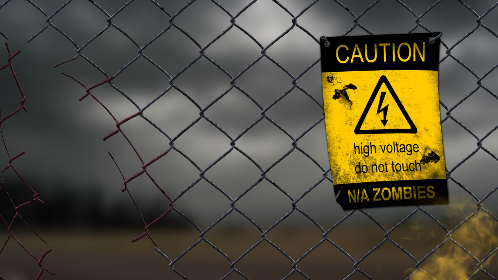

This page consists of the various images that I have drawn inspiration and motivation from.
I feel these particular images really resonated with me and had an impact on how I created my game.
They truly fit the theme I was trying to capture. The dark, scary forest, the fenced off 'CAUTION' sign, and the trench warfare images especially.
The first image of the low poly trench warfare was the first image I found that really helped me because I knew I really wanted to have my theme centred around WW1 and I also knew I had to make the game in a low-poly art style.
Thus, this image was perfect and everything I wanted my game to be like but combined with a forest-like setting. The final image of the helicopter is part of what I have planned for the game at the end.
I want there to be a certain area that’s not accessible to the player until a certain objective has been met, which then allows them access from which they can then proceed to try to escape by helicopter.
